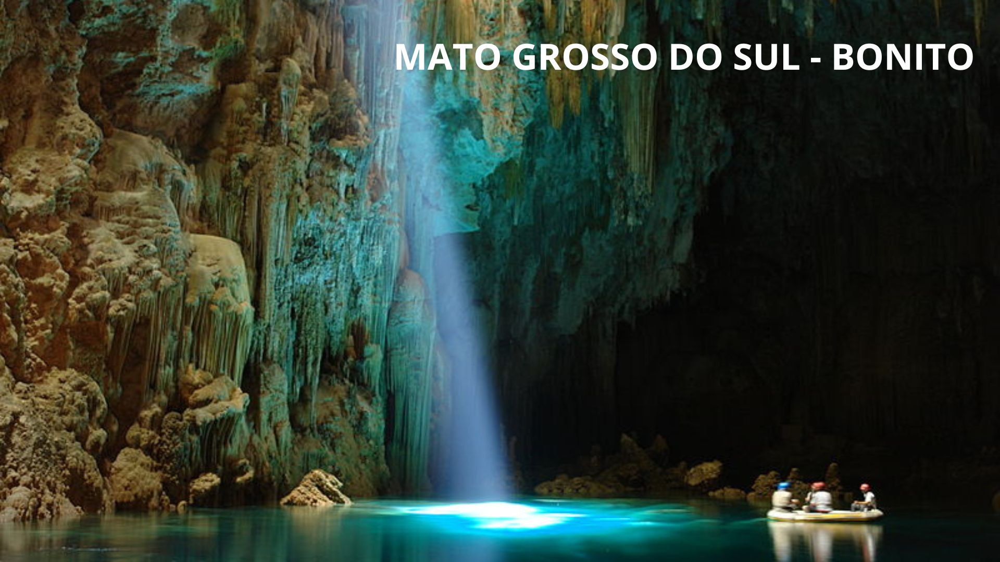
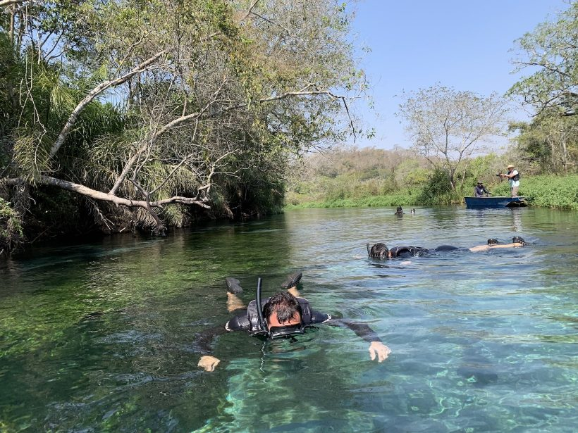

Sobre Bonito:
Bonito é uma cidade do Mato Grosso do Sul focada em ecoturismo, o que
garante paisagens belíssimas e passeios deslumbrantes para se conectar
com a natureza.
O município é reconhecido como um dos melhores destinos ecológicos do
país, já que concilia suas belezas naturais com um turismo sustentável,
preservando seu ecossistema para receber tanto famílias quanto casais,
ou mesmo viajantes independentes que amam trilhas e atividades ao ar
livre.
O cerrado sul-mato-grossense apresenta lugares incríveis, com grutas,
cachoeiras, lagoas e rios de águas cristalinas e absurdamente
transparentes, que proporcionam mergulhos inesquecíveis e a prática de
diversos esportes e programas, ideais para todos os públicos.
Pousadas e Hotéis em Bonito:
Bonito tem uma rede hoteleira variada, que inclui pousadas simples,
albergues, hotéis mais estruturados, pousadas de charme e até resort. As
acomodações ficam localizadas em diferentes áreas da cidade, algumas
mais próximas ao centro, localização ideal para quem está sem carro e
quer fazer algumas atividades a pé, e também na região rural, indicada
para quem tem um carro alugado a seu dispor.
Quando for o momento de fazer a reserva de seu hotel ou pousada em
Bonito, além de escolher um lugar com localização compatível com seu
meio de transporte, pode valer a pena escolher uma acomodação que tenha
piscina. Com o calor que faz na cidade, uma piscina pode ser excelente
para descansar! Além disso, o ritmo dos passeios pode ser cansativo para
quem não está acostumado, afinal são muitas atividades durante o dia, e
chegar ao hotel e ter a opção de relaxar em uma piscina é renovador!
Depois da piscina você estará pronto para curtir um bom jantar!
O que fazer em Bonito:
Bonito é um destino que realmente faz jus ao seu nome, adquirido porque
antigamente havia na região uma fazenda de nome Rincão Bonito. É um
lugar incrível para admirar rios cristalinos, a vida aquática, observar
aves e outros animais silvestres, visitar cavernas, como a Gruta do Lago
Azul com um lago de cor surpreendente , fazer trilhas junto à
natureza.
Você também pode passar o dia aproveitando as águas calmas de um
balneário, curtir um banho revigorante em uma cachoeira ou fazer
atividades com emoção, como um bóia Cross, descida em rapel ou em uma
tirolesa.
As possibilidades são inúmeras e é exatamente isso que impressiona em
Bonito, seu potencial de sempre oferecer atividades novas atividades na
natureza e poder apreciá-la das mais diversas formas, seja em um rio, em
terra firme, ou do alto.
-
Gruta do Lago Azul
A caverna mais conhecida em Bonito e aquela que não deve faltar na
sua programação é a Gruta do Lago Azul, que tem um cenário
impressionante. O local, assim como outras cavernas, é visitado na
presença de um guia e para ser conhecido em sua totalidade exige uma
descida com cerca de 300 degraus. O cenário é realmente
impressionante, com formações antiquíssimas e uma água de coloração
incrível. Embora os 300 degraus possam parecer difíceis, o trajeto
costuma ser feito em um ritmo lento e mesmo pessoas da melhor idade
costumam visitá-la.

-
Grutas de São Miguel
Outra gruta que também é bonita e vale uma visita se você gosta de
fazer programas diferentes são as Grutas de São Miguel, em que se
faz um pequeno percurso suspenso na mata para acessá-la e a Gruta
São Mateus. O passeio é super bonito, realizado em uma área cercada
pela mata e embora não seja tão famoso com a Gruta do Lago Azul,
também é excelente para admirar as formações geológicas dentro da
caverna.

-
Flutuação no Rio Sucuri
Fazer a flutuação em um dos rios da região é um passeio imperdível
em Bonito. O Rio Sucuri, considerado o mais cristalino do Brasil é
muito bacana não apenas por causa dos peixes que se pode observar no
lugar mas também pela flora, que é diversificada. Esse passeio, que
é realizado em diferentes trechos do Rio, certamente é um dos mais
bonitos da região.

-
Flutuação na Nascente Azul
Uma flutuação que surpreendeu durante nossa viagem foi na Nascente
Azul, um lugar com um rio pequeno, mas de águas límpidas e com
muitos peixes! A experiência foi realmente incrível! A propriedade
também tem outras atividades para toda a famílias como o balneário e
tirolesa!

Quando ir em Bonito:
Bonito é uma cidade que pode ser visitada o ano inteiro, mas cada
estação oferece uma experiência diferente ao visitante. A cidade e
arredores têm duas estações bem definidas: chuvosa (verão) e seca
(inverno). Você pode visitar e revisitar Bonito em qualquer época, o
importante é saber que cada período oferecerá qualidades distintas. A
alta estação em Bonito ocorre durante o verão, quando as cachoeiras
estão mais cheias, mas é no inverno que os rios ficam mais cristalinos
por causa da falta de chuvas. Faz bastante calor durante todo o ano,
especialmente no verão, e viajando no inverno você poderá experimentar
temperaturas mais amenas e até geladas, a depender do dia. Uma sugestão
que deixo é viajar no outono ou na primavera, períodos de meia estação,
com dias nem tão quentes e nem tão frios, geralmente com noites frescas.